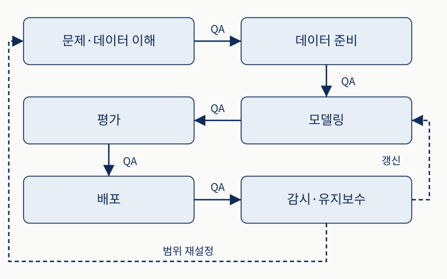
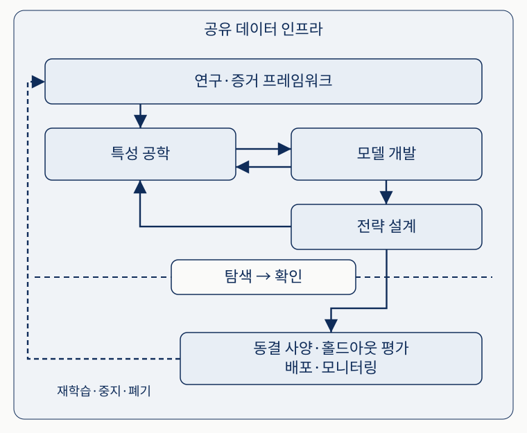
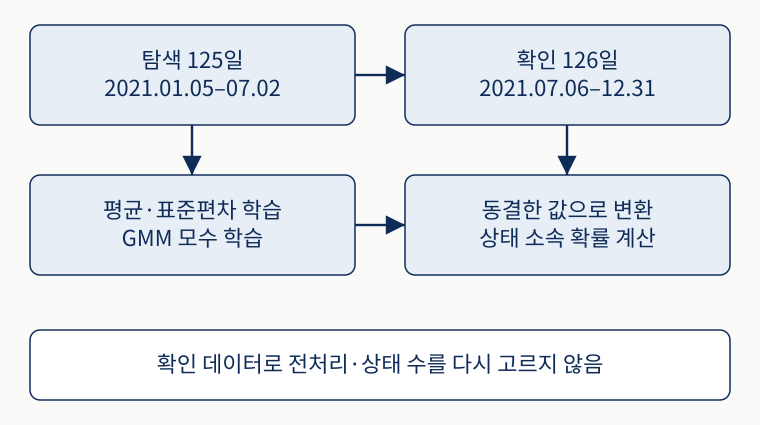
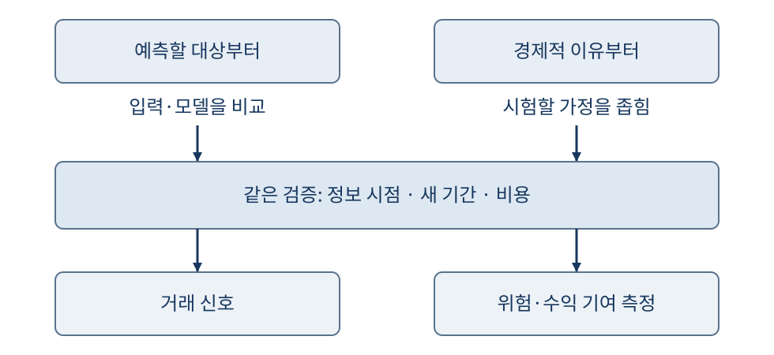
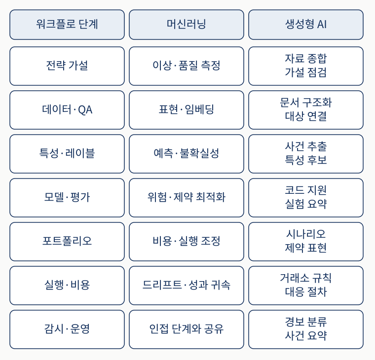
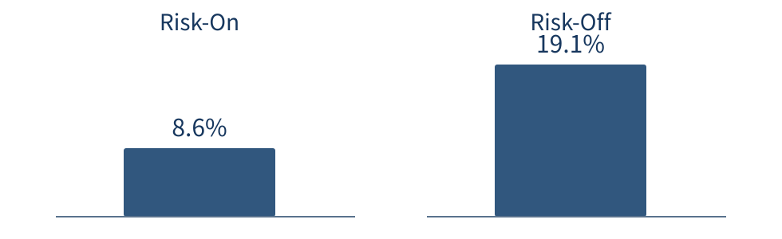
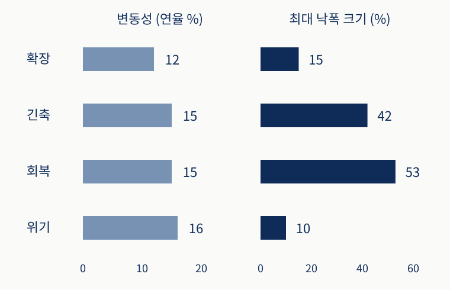

좋아 보이는 결과
최근에 오른 주식을 샀더니 과거 수익률이 높았습니다.
트레이딩을 위한 머신러닝 3판
과거에 잘된 전략을 어디까지 믿을 수 있을까
백테스트는 과거 자료로 매매 규칙의 결과를 계산하는 일입니다.
최근에 오른 주식을 샀더니 과거 수익률이 높았습니다.
그날 알 수 있던 정보였을까? 운이 좋았을까? 비용을 빼도 남을까?
이 질문을 확인하는 과정이 1장의 주제입니다.
과거에 잘된 방법이 왜 계속 잘되지는 않을까요?
시장 변화와 반복 실험이 결과에 어떤 영향을 주는지 살펴봅니다.
가격이 결국 돌아와도, 그 전에 손실 한도를 넘으면 버틸 수 없습니다.
크게 벗어난 가격이 평소 수준으로 돌아오리라 기대합니다.
매수 쏠림이 오래가면 기다리는 시간과 손실이 커집니다.
원서의 2021년 밈 주식 사례는 보유 기간과 손실 한도의 중요성을 설명합니다.
같은 시장을 보더라도 무엇을 찾는지에 따라 부르는 이름이 다릅니다.
| 용어 | 보는 대상 | 구체적인 상황 |
|---|---|---|
| 구조적 단절 | 관계가 바뀐 시점 | 제도 변경 뒤 거래 방식이 갑자기 달라졌습니다. |
| 국면 | 비슷한 성질이 이어지는 상태 | 가격이 잔잔한 시기와 크게 오르내리는 시기가 있습니다. |
단절은 “언제 바뀌었나”, 국면은 “어떤 상태가 이어지나”를 묻습니다.
두 경우 모두 드리프트라고 부르지만, 바뀐 대상이 다릅니다.
| 용어 | 무엇이 달라졌나 | 구체적인 상황 |
|---|---|---|
| 데이터 드리프트 | 모델에 넣는 값의 분포 | 거래량의 크기가 전반적으로 커졌습니다. |
| 개념 드리프트 | 입력과 예측 대상의 관계 | 거래량이 늘면 가격이 오르던 관계가 약해졌습니다. |
거래량 증가 경보가 뜨면 실제 거래가 늘었는지, 자료의 단위가 바뀌었는지부터 봅니다.
같은 과거 자료에서 종목·관찰 기간·매수 기준·모델을 계속 바꿔 봅니다.
여러 설정을 비교한 뒤 과거 수익률이 가장 높은 것을 고릅니다.
규칙이 유용했는지, 그 기간의 우연에 잘 맞았는지는 구분되지 않습니다.
과거의 우연까지 익혀 새로운 자료에서는 성능이 약해지는 현상입니다.
후보를 고른 과정을 기록하고, 새로운 자료에서 따로 평가해야 합니다.
CRISP-ML(Q)는 모델을 만들고 실제로 운영하는 과정을 품질 점검과 연결합니다.

위쪽 왼편부터 화살표를 따라갑니다. QA는 다음 단계로 넘기기 전의 품질 점검입니다.
감시에서 찾은 문제에 따라 모델을 다시 학습하거나 연구 범위부터 고칩니다.
아이디어를 어떻게 시험하고 실제로 운용할까요?
데이터, 모델, 거래 규칙을 정한 뒤 평가와 감시까지 연결합니다.
이해를 위한 가상 전략입니다. 아직 수익이 확인된 방법은 아닙니다.
오늘 장이 끝난 뒤 계산하고 다음 거래일에 주문합니다.
최근 20일 수익률을 입력값, 즉 특성으로 씁니다.
이후 정한 기간의 수익률이 예측 대상, 즉 레이블입니다.
거래 대상과 보유 기간, 얼마를 살지도 정해야 같은 시험을 할 수 있습니다.
모델과 거래 규칙을 고치더라도 데이터의 뜻과 평가 기준은 일관돼야 합니다.

위쪽은 후보를 고치는 과정입니다. 아래로 넘어갈 때는 별도로 남긴 자료에서 평가합니다.
운용에서 발견한 문제는 데이터와 연구 질문으로 돌아갑니다.
5월에 발표하고 6월에 정정한 회사 실적을 가정해 봅시다.
| 거래 시점 | 사용할 수 있는 값 |
|---|---|
| 4월 | 아직 발표되지 않은 실적은 사용할 수 없습니다. |
| 5월 발표 이후 | 그때 공개된 최초 값만 압니다. |
| 6월 정정 이후 | 수정값을 알게 됩니다. 이전 판단에 소급하지 않습니다. |
나중에 안 정보를 과거 판단에 쓰는 것이 정보 누출입니다. 코드가 잘 돌아가도 평가가 부풀 수 있습니다.
예측만으로는 얼마를 사고, 언제 팔며, 어떤 때 거래를 멈출지 정해지지 않습니다.
이후 가격이 오를 것 같다는 판단입니다.
실제로 얼마나, 어느 방향으로 보유할지 정합니다.
매도 시점, 거래하지 않을 조건, 주문 규모와 손실 한도를 정합니다.
이 조건에 수수료와 체결 비용까지 적용해야 실제 손익을 계산할 수 있습니다.
아래는 한 번의 매매에서 비용이 미치는 영향을 보여 주는 가상 계산입니다.
스프레드매수·매도 호가의 차이
슬리피지예상 가격과 체결 가격의 차이
시장 충격내 주문이 만든 가격 변화
수수료 외에도 이런 비용이 듭니다. 서로 겹쳐 집계하지 않도록 매수·매도 총비용을 정합니다.
실제 투입 전에는 주문 기록만 하는 단계와 소액 시험을 거칩니다. 운용 중에는 네 곳을 살핍니다.
| 볼 곳 | 문제의 예 | 검토할 조치 |
|---|---|---|
| 데이터 | 자료 지연 | 수집 경로 확인 |
| 신호 | 예측 관계 약화 | 입력·모델·가설 재검토 |
| 체결 | 비용 증가 | 주문 방식·규모 검토 |
| 위험 | 한도 초과 | 보유 축소·주문 중지 |
다시 학습할 때, 멈출 때, 전략을 끝낼 때의 기준을 미리 정합니다.
최근 5일·10일·20일·60일 수익률과 매수 기준을 조합해 100개 후보를 시험했다고 해봅시다.
이 설정이 이 과거 기간에서 가장 잘됐습니다.
처음 보는 기간에서도 좋은 결과가 남을까요?
실패한 시도까지 기록해야 최종 결과가 어떤 선택을 거쳤는지 알 수 있습니다.
따로 남겨 둔 최종 확인 자료를 홀드아웃이라고 합니다.

그림의 왼쪽에서 학습·평가 구간을 옮겨 가며 반복합니다. 이를 워크포워드라고 합니다.
오른쪽 자료는 이 반복에 쓰지 않고, 규칙을 고른 뒤 최종 확인할 때 엽니다.
수정은 할 수 있습니다. 다만 같은 자료를 새 시험이라고 부를 수는 없습니다.
뒤 기간의 성과가 나빠서 20일 규칙을 10일 규칙으로 바꿨습니다.
뒤 기간의 정보가 규칙을 고르는 데 사용됐습니다.
변경을 기록하고, 독립적으로 확인할 새 절차를 마련합니다.
자료를 나눈 모양보다 어떤 결과가 선택에 영향을 주었는지가 중요합니다.
인과 추론과 생성형 AI는 어디에 도움이 될까요?
가정을 따지는 일과 문서·코드를 만드는 일을 구분해 봅니다.
같은 주가 상승을 연구해도 처음 던지는 질문이 다를 수 있습니다.
| 접근 | 먼저 던지는 질문 | 이어지는 작업 |
|---|---|---|
| 예측 우선 | “앞으로 오를 종목을 구별할 수 있을까?” | 여러 입력과 모델의 예측을 비교합니다. |
| 기제 우선 | “정보가 가격에 천천히 반영되는 것 아닐까?” | 이 가설이 맞는 조건과 틀릴 조건을 좁힙니다. |
기제는 결과가 생기는 작동 과정입니다. 실제 연구에서는 두 접근을 함께 쓸 수 있습니다.
두 접근 모두 거래 신호를 만들거나, 위험과 수익의 기여를 측정하는 데 쓰일 수 있습니다.

위쪽은 출발점, 아래는 결과의 용도입니다. 출발점과 결과가 일대일로 대응하지는 않습니다.
그럴듯한 이유와 좋은 예측 모두 새 기간의 평가와 비용 확인을 거쳐야 합니다.
거래량과 주가가 함께 올랐다고 가정해 봅시다.
거래량이 늘어서 주가가 올랐다고 단정합니다.
기업의 새로운 소식이 거래량과 가격을 함께 움직였을 수 있습니다.
무엇을 비교하고 어떤 가정을 확인할지 구체화합니다.
원서는 모든 전략에 완전한 인과 증명을 요구하지 않습니다.
공시 요약, 특성 후보, 분석 코드와 실험 정리를 도울 수 있습니다.
요약과 설명을 실제 공시가 뒷받침하는지 봅니다.
과거 문서를 읽는 모델이 이후 사건을 학습했을 수 있습니다.
AI가 만든 많은 후보 중 무엇을 왜 골랐는지 남깁니다.
그럴듯한 설명이나 실행되는 코드만으로 연구의 정확성을 판단하지 않습니다.
각 행은 같은 연구 단계에서 수치 분석과 생성형 AI가 돕는 작업의 예입니다.

가설에서는 패턴 탐색과 자료 정리, 감시에서는 성능 변화 점검과 경보 요약을 비교해 보세요.
표는 작업의 예입니다. 생성한 코드의 실행 성공만으로 연구가 올바르다고 판단하지 않습니다.
어떤 시장 환경에서 내 전략의 손실이 커질까요?
비슷한 시기를 묶어 위험을 비교하고, 실제 판단에 쓸 수 있는지 따져 봅니다.
원서의 첫 국면 분석은 시장과 여러 투자 방식의 월별 수익률을 함께 봅니다.
시장 수익률과 여러 투자 방식의 수익률을 한 묶음으로 만듭니다.
수익률들이 함께 움직이는 모양이 비슷한 달들을 묶습니다.
이렇게 나눈 집단에서 위험이 얼마나 달랐는지 비교합니다.
집단을 먼저 찾은 뒤 각 집단의 과거 성과를 해석합니다.
가우시안 혼합 모형(GMM)은 여러 정규분포 집단을 가정합니다. 원서는 2–6개를 비교해 두 상태로 해석했습니다.
평균 근처가 많고 양쪽으로 갈수록 드문, 종 모양의 분포입니다.
집단별 평균과 퍼짐, 각 달이 각 집단에 속할 확률을 구합니다.
과거 주식시장 결과가 더 나빴던 집단을 Risk-Off라고 부릅니다.
집단에 속할 확률은 다음 달에 수익이 날 확률이 아닙니다.
변동성은 수익률이 얼마나 크게 흔들리는지 나타냅니다.

원서 §1.4 본문이 보고한 1927–2024년 사후 국면별 연율 변동성입니다. 새 실험의 결과는 아닙니다.
원서 그림 범례의 이동 변동성 평균 9.8%·12.7%와는 다른 값입니다. 같은 통계로 섞지 않습니다.
원서는 실업률·기준금리·장단기 금리차·물가상승률로 상태를 묶어 S&P 500의 위험 수치를 보고했습니다.

최대 낙폭은 고점에서 저점까지의 가장 큰 누적 하락입니다. 오른쪽 낙폭 크기는 회복 53%, 위기 10%입니다.
두 열은 별도 축입니다. 상태 이름만으로 손실 순위를 정하지 않고 기간과 계산 방법을 함께 봅니다.
미래의 손실을 보고 오늘에 위험 표시를 붙일 수는 없습니다.
1년이 끝난 뒤 전체 자료를 보고 위험했던 달을 표시합니다.
오늘까지 공개된 자료만으로 지금의 변화를 찾습니다.
미래를 보고 붙인 표시를 과거 매매에 쓰면 정보 누출입니다. 당시 공개 자료로 다시 평가해야 합니다.
국면 이름을 맞히는 것보다 어떤 조건에 대응할지 정하는 것이 먼저입니다.
변동성 급증, 유동성 감소, 체결 비용 증가를 살펴봅니다.
시험해 둔 기준에 따라 보유 규모를 줄이거나 신규 주문을 멈춥니다.
무슨 일이 생겼는지 확인할 지표와 그때의 조치를 연구 단계에서 정합니다.
혼자 연구하면 누가 낙관적인 가정을 지적해 줄까요?
결과를 만들려는 나와 그 결과를 의심하는 나 사이에 기록을 둡니다.
같은 사람이 전략 개발과 검토를 모두 맡는 상황을 생각해 봅시다.
데이터·체결·위험 담당자가 따로 확인합니다. “그 가격에 거래할 수 있나요?”라고 묻습니다.
만드는 사람과 의심하는 사람이 같습니다. 낮은 비용·좋은 체결·유리한 기간을 함께 고르기 쉽습니다.
결과를 본 뒤 성공 기준을 바꾸기 쉽습니다. 기준을 미리 적고, 바꿨다면 이유를 남깁니다.
지금 살아남은 회사만으로 과거를 평가하면 생존 편향이 생깁니다. 어떤 자료를 골랐는지도 봅니다.
언제 어떤 정보로 거래하며, 어떤 결과면 그만둘까요?
그날 공개된 값인가요? 지금 남아 있는 종목만 평가하지는 않나요?
다른 기간이나 작은 설정 변경에서도 결과가 남나요?
특정 설정에서만 좋은 결과는 계속 탐색할 후보로 둡니다.
조건 변화에 결과가 얼마나 민감한지 확인하는 시험입니다.
비용을 두 배로 높이거나, 주문을 늦추거나, 거래 규모를 제한해 봅니다.
손실이 나면 데이터·신호·체결 중 무엇이 달라졌는지 구분합니다.
비용 두 배는 원서의 시험 예시입니다. 모든 전략의 공통 합격선은 아닙니다.
개인은 속도 경쟁과 비싼 데이터가 필수인 문제부터 고를 필요는 없습니다.
내 규모에서 비용과 체결이 성립하는 기회를 찾습니다.
데이터 처리, 비용 계산, 시간 분할과 실험 기록을 다시 씁니다.
잘못된 결과를 빨리 찾을수록 다음 아이디어를 평가하는 수고가 줄어듭니다.
좋은 결과를 믿을 근거와, 나쁜 결과의 원인을 설명할 수 있나요?
이 질문으로 연구의 시작부터 운용까지 다시 연결해 봅니다.
좋은 절차가 수익을 보장하지는 않습니다. 판단의 근거를 남기는 일입니다.
그날 알 수 있었던 데이터와 거래 조건을 정합니다.
후보 선택을 기록하고 처음 보는 자료에서 시험합니다.
비용과 위험을 적용하고 성과 악화의 원인을 구별합니다.
한 번 잘된 전략보다 잘못된 결과를 걸러낼 연구 습관을 남깁니다.
다음 2장에서는 출발점인 금융 데이터의 종류와 구조를 살펴봅니다.
마지막 시험 결과를 보고 규칙을 바꾸면 무엇이 달라질까요?
예측이 맞아도 손실이 날 수 있는 이유는 무엇일까요?
과거의 위험한 달을 분류한 그림을 바로 매매에 쓰면 왜 문제가 될까요?